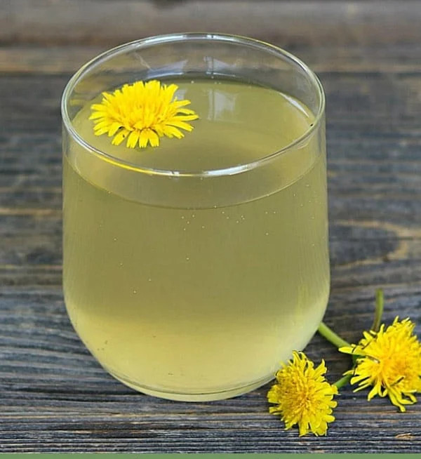

Odins Recipes
Odins Recipes
Dandelion Mead

Dandelion wine is an old school recipe that has been around for centuries. The yellow petals have a honey-like flavor and they make a delicious wine! I prefer to make dandelion mead, as I feel like it is even more flavorful that way.
- Prep: 45 mins
- Cook: 4-6 weeks
- Total: Longer than a pint of guinness
- Servings: 12 people; 1 God
- Yield: 1 gallon
Ingredients
- 1 cup of dandelion petals
- 1 gallon water
- 1 (.18 ounce) package wine yeast
- 3 pounds of honey
- 1 orange sliced
- 1 cup of raisins
Directions
- Heat the gallon of water.
- When the water has warmed up (but not boiling) add the honey (stirring) to dissolve.
- Once dissolved, turn off the heat, then add in the dandelion petals.
- Add the fruit into a sterilised 1 gallon jug (the raisins are to assist with the yeast reaction, no flavour ends up in the end mead).
- Carefully pour in the honey water (use a funnel is recommeded).
- Top off the jug with cool filtered water, leaving at least 2 inches of head space on top. Place a lid on top and shake everything about.
- Once the mixture is sufficiently cool (no more than 32C/90F), add in the yeast, re-lid and shake up again.
- Add an airlock on top of the bottle instead of a lid and set aside for 3-4 weeks (5-6 weeks could be a more feasible timeframe).
- Once the bubbling has stopped, strain the juice, bottle and enjoy.
Nutritional Information
Per Serving: 202 calories; protein 0.3g; carbohydrates 50.6g; fat 0g; cholesterol 0mg; sodium 8mg.